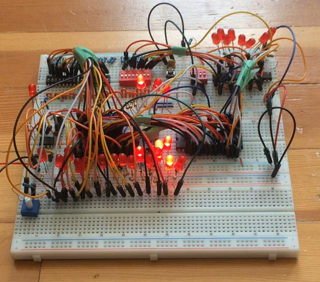
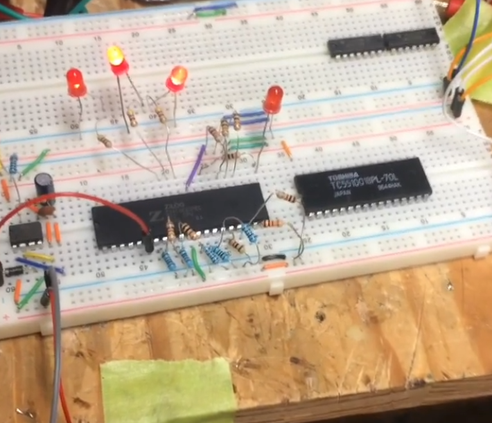
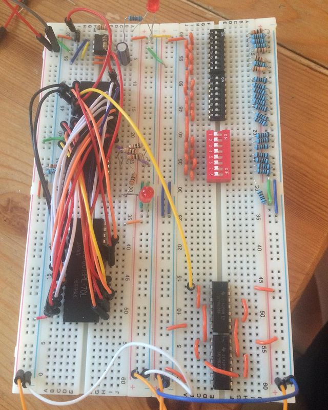

Z80 breadboard computer
This is a breadboard computer based around the Z80 microprocessor that I designed, built, and programmed. I had the idea and bought the parts for it in summer 2018, but I did most of the work on it from July to October 2019.

Inspiration
I was inspired to build this computer after watching this video on YouTube. It really helped me understand how computers work at a low level, and showed just how simple one could be.
Specifications and design philosophy
Here are the specifications for the computer:
- 8-bit Z80 microprocessor
- 1-20 Hz variable clock rate
- 32k of RAM (128k available, but only 32k used), no ROM
- Single-byte output on 8 LEDs
- Reading and writing to RAM by entering binary addresses and data with 24 DIP switches
An often quoted factoid about modern technology is that "(computer system for a mundane purpose) is more powerful than the Apollo Guidance Computer", and I have certainly used this to describe various computing systems in my possession. However, this computer is actually one of the rare examples where this statement is incorrect, as it is orders of magnitude slower than the AGC. The reason for its abysmal performance is that I built it to learn how computers work on a low level, and to practice assembly programming, and I wanted to be able to see it working in real time, which necessitated a slow clock rate. I also wanted to be able to program it without any external hardware, hence why there is no ROM chip. The reason it has so much RAM is because that RAM chip was cheap and available on eBay at the time, and when I bought the Z80, it was being sold by the same seller.
Building the computer
I bought the first parts for the computer on eBay in the summer of 2018, but they didn't arrive until the end of summer, which meant that I got busy with school before I could make meaningful progress on the computer. However, during the school year, I found time to design the computer and finalize what exactly I wanted it to be, which I decided to be as simple as possible while still being a fully programmable computer. I decided that I wanted it to be as simple as possible, so that I could easily learn more about assembly programming and how computers work at a low level. I started really working on it the following summer, as by then I had time and had accumulated a number of complimentary components that I needed for the project.

I initially started out with a simple 555 timer circuit running the Z80 with all the data pins pulled low, which equated to it being constantly given the NOP instruction, which just made the program counter increase, and therefore the output on the address bus increase. This allowed me to make sure that the Z80 was working and that it would accept the clock pulses from the 555. I then wired up the data and address busses, the output circuit (which is just a logic circuit which outputs the contents of the data bus if the address requested is greater than 32767), and the switches for programming the computer.

I encountered some issues, such as broken wires and not being able to properly write to the RAM chip using the switches, but after doing some debugging, reading the RAM chip datasheets, and asking for help on some online forums, I finally had a working computer! I wrote a couple of simple programs for it, such as a counting program to make sure that it was fully working, and a program to display the Fibonacci sequence.
Future plans
My future plans for the computer include writing a program to find prime numbers, and using it to validate a Z80 emulator that I'm currently working on. I would also like to try building a breadboard CPU from just logic gates at some point (something like Ben Eater's 8-bit breadboard CPU), but I would like to wait until I complete my computer architecture class this coming semester before I do that.